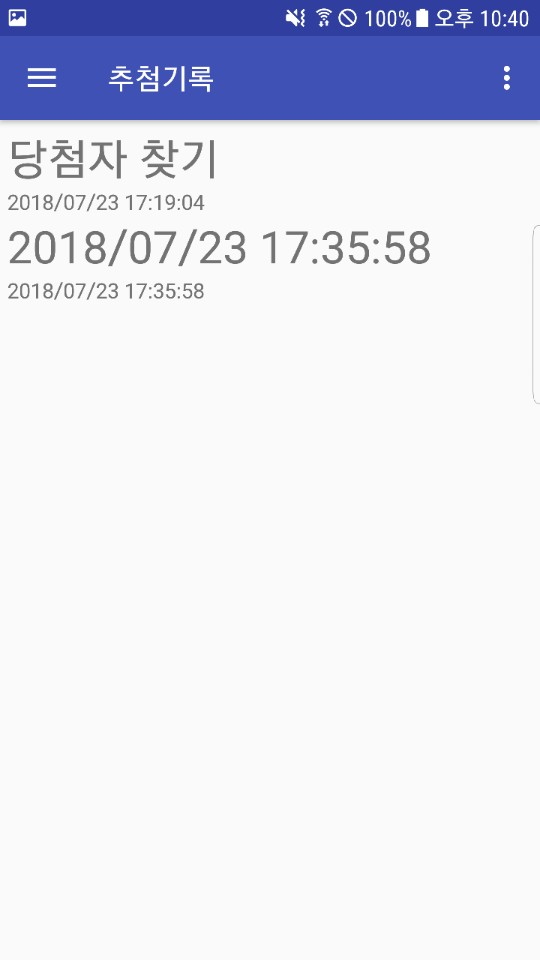
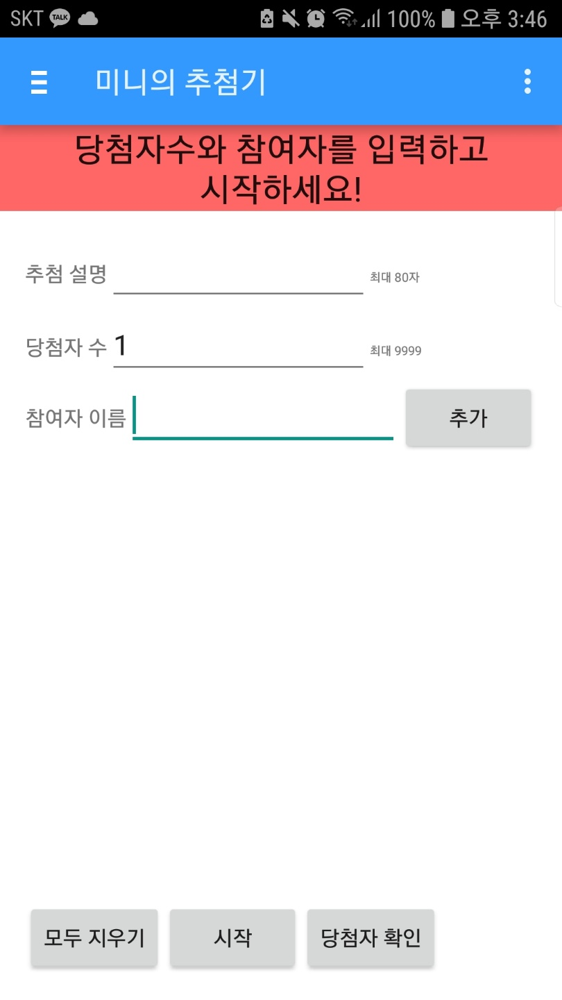
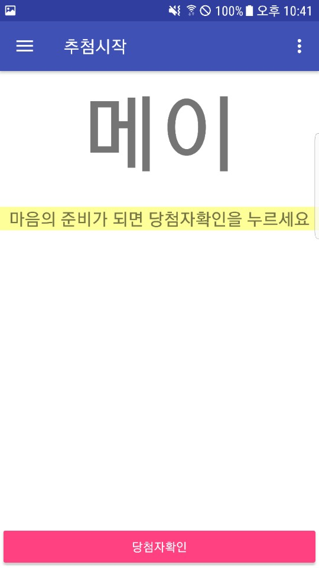
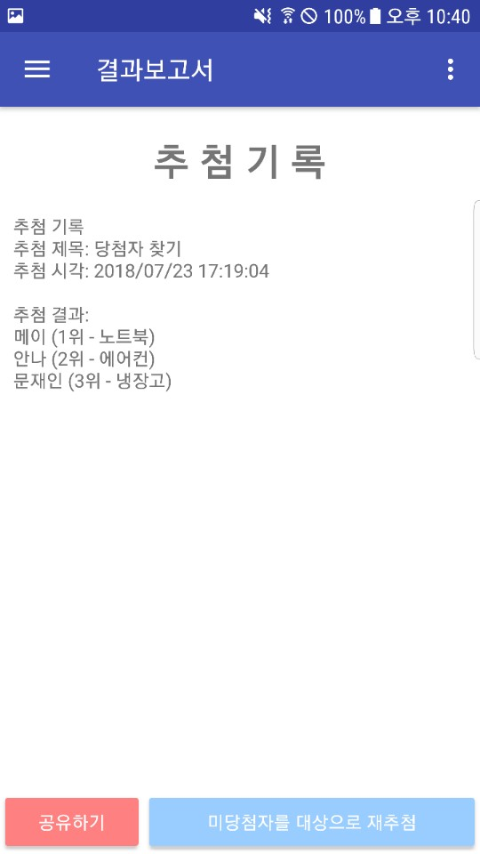
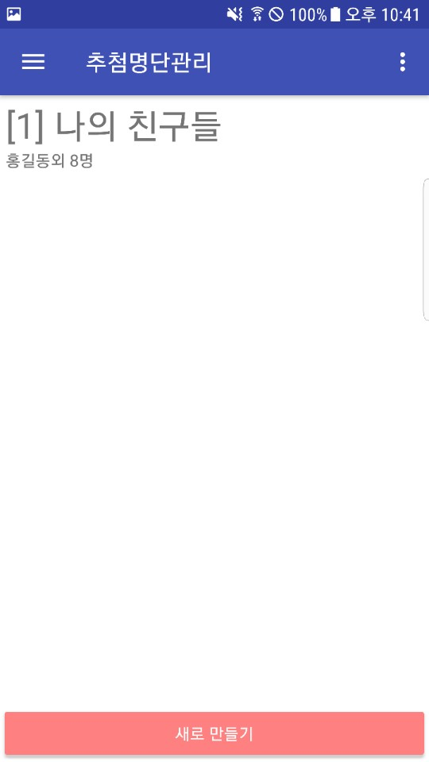

Android 앱 «Mini's Lottery»






Google Play에서 5만 회 이상 다운로드된 상용 안드로이드 앱 «Mini's Lottery»다. 기획된 사내 프로젝트가 아니라 실제 마켓에 출시되어 사용자를 확보한 상용 제품으로, UI/UX 디자인부터 개발, 시장 전략까지 전반을 담당했다.
연구·시스템 개발 이력과 별개로, 아이디어 구상에서 스토어 출시·사용자 확보에 이르는 상용 앱의 전체 생애주기를 직접 경험한 사례다. 실제 사용자 5만 명 이상이라는 시장의 검증을 받았다.
구조 · 설계
안드로이드 네이티브 앱으로, 앱의 화면 구성과 사용자 흐름을 설계한 UI/UX 계층, 실제 기능을 구현한 애플리케이션 개발 계층, 그리고 Google Play 등록·노출·사용자 확보를 다룬 시장 전략 계층으로 나눌 수 있다. 한 명이 디자인·개발·운영을 모두 관장하는 풀사이클(full-cycle) 구조로 진행되었다.
설계 목표
연구실이나 수탁 과제의 결과물이 아니라, 실제 시장에서 사용자에게 선택받는 제품을 직접 만들어 내는 것이 목표였다. 좋은 화면 설계(UI/UX)와 기능 구현을 넘어, 앱이 스토어에서 발견되고 다운로드로 이어지게 하는 시장 전략까지 하나로 엮어, 기술과 사용자·시장을 연결하는 제품 관점을 체득하는 데 의미를 두었다.